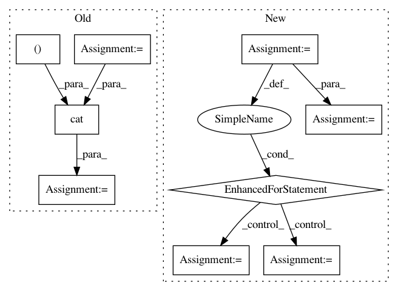

9a244189f1fe351a4fc4ce47e928bd3b3163fa2e,Tars/distributions/real_nvp.py,RealNVP,forward,#RealNVP#Any#Any#Any#,45
Before Change
return scale, trans
def forward(self, x, inverse=False, jacobian=False):
x_0 = x[:, :self.masked_features]
x_1 = x[:, self.masked_features:]
scale, trans = self._scale_translation(x_0)
if jacobian is False:
if inverse:
x_1 = (x_1 - trans) * torch.exp(-scale)
else:
x_1 = x_1 * torch.exp(scale) + trans
output = torch.cat((x_0, x_1), dim=-1)
else:
output = torch.sum(scale, dim=-1)
After Change
if inverse is False:
_flows = self.flows
else:
_flows = self.flows[::-1]
if jacobian is False:
for flow in _flows:
x = flow(x, inverse=inverse)
output = x
else:
logdet_jacobian = 0
for flow in _flows:
x, _logdet_jacobian = flow(x,
inverse=inverse,
jacobian=jacobian)
logdet_jacobian += _logdet_jacobian
output = logdet_jacobian
return output
In pattern: SUPERPATTERN
Frequency: 3
Non-data size: 9
Instances
Project Name: masa-su/pixyz
Commit Name: 9a244189f1fe351a4fc4ce47e928bd3b3163fa2e
Time: 2018-07-19
Author: masa@weblab.t.u-tokyo.ac.jp
File Name: Tars/distributions/real_nvp.py
Class Name: RealNVP
Method Name: forward
Project Name: kengz/SLM-Lab
Commit Name: 51975a8639d0b83544ec2f932567656b25bfc965
Time: 2018-09-02
Author: lgraesser@users.noreply.github.com
File Name: slm_lab/agent/algorithm/math_util.py
Class Name:
Method Name: calc_nstep_returns
Project Name: interactiveaudiolab/nussl
Commit Name: fa6f47e7aee228226421c52e61cce4e1ab4cc099
Time: 2020-03-15
Author: prem@u.northwestern.edu
File Name: tests/ml/test_loss.py
Class Name:
Method Name: test_permutation_invariant_loss_tf